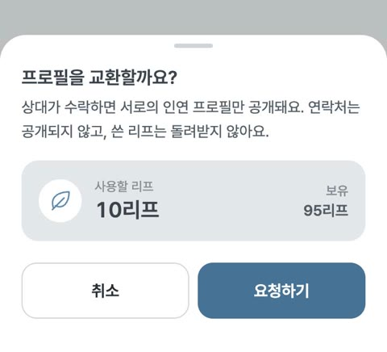
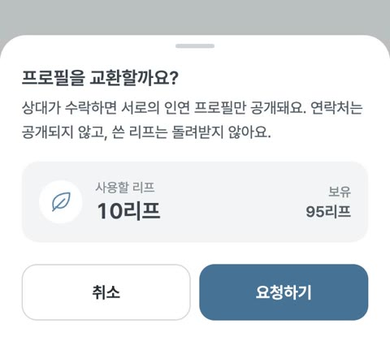
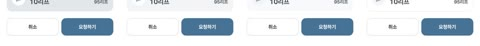

"사용할 리프" 카드 배경 · 더 연하게
답장 쓰기 · 인연 다시 보기 · 프로필 교환 요청 시트에 같이 쓰는 카드예요. 예시는 프로필 교환 요청.

지금cool-neutral-100(#E3E7EA) · 리프 동그라미 흰색

Acool-neutral-50(#F1F4F6) · 한 단계 연하게, 리프 동그라미 흰색 그대로
B50과 흰색 사이(#F8F9FB) · 거의 흰 바탕, 리프 동그라미는 cool-neutral-50

C흰 바탕 + 얇은 선 · 배경 없이 1px 테두리, 리프 동그라미는 cool-neutral-50